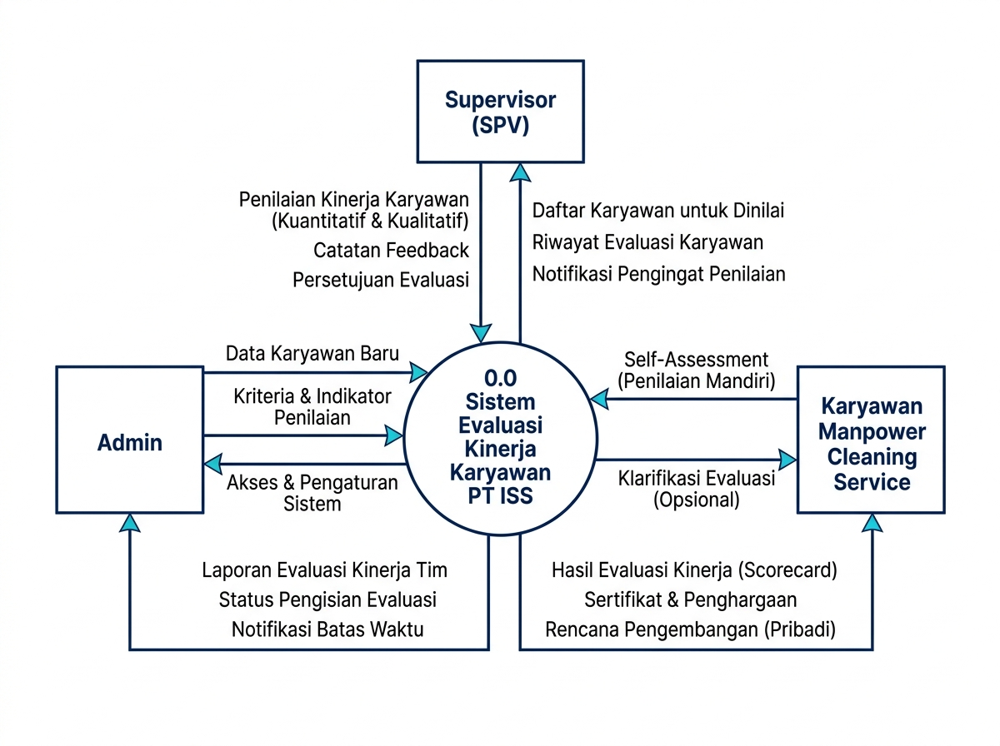
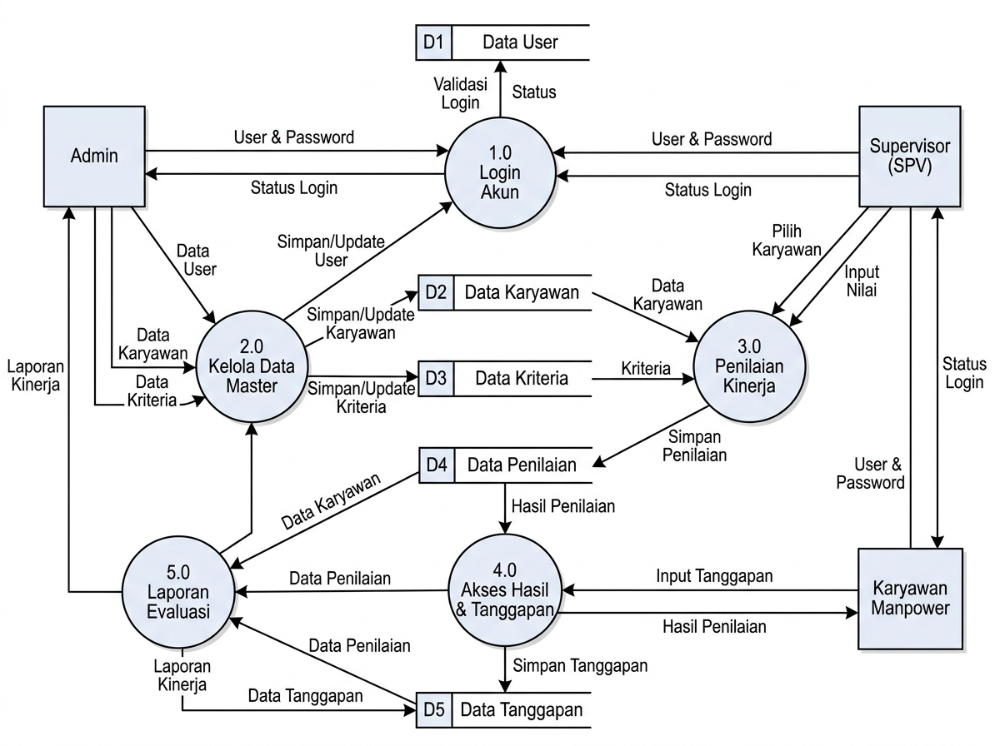
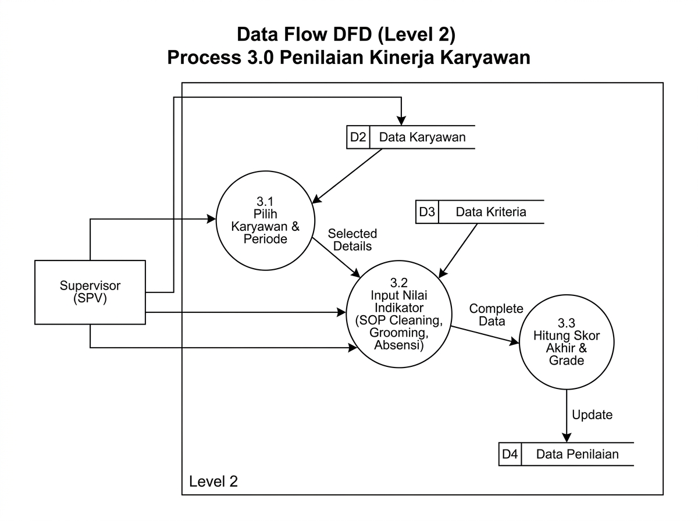

Studi Kasus: PT ISS Indonesia — Area Penempatan PEMDA Tangerang Selatan (Cleaning Service)
Menggambarkan sistem secara global dan aliran data keluar-masuk antara 3 entitas eksternal: Admin, Supervisor (SPV), dan Karyawan Manpower Cleaning Service.

Menguraikan sistem menjadi 5 proses utama (1.0 Login, 2.0 Kelola Data Master, 3.0 Penilaian Kinerja, 4.0 Akses Hasil & Tanggapan, 5.0 Laporan Evaluasi) serta 5 Data Store basis data (D1 s/d D5).

Merinci alur kerja Supervisor di lapangan mulai dari pemilihan manpower shift (3.1), penilaian indikator SOP Cleaning/Grooming/Absensi (3.2), hingga kalkulasi skor grade otomatis (3.3).
